Transformer architectures have become the dominant paradigm in robot manipulation, owing to their ability to model multimodal data across vision, language, and action spaces. However, most small- to mid-scale policies remain single-task models with limited generalization. Mixture-of-Experts (MoE) architectures have demonstrated strong multi-task capabilities in language modeling, yet remain largely unexplored in robot manipulation.
In this work, we investigate how MoE-based transformer architectures transfer to robot manipulation, with a focus on improving multi-task performance. We evaluate on the ALOHA benchmark across both simulated and real-world settings. Our model achieves a 4% improvement in simulation task success rates and a 70% improvement in real-world task success rates over the current state-of-the-art baseline, ACT, demonstrating that MoE-based architectures can significantly enhance multi-task generalization in robot manipulation.
SMoRE is an encoder-decoder transformer. The encoder fuses multi-camera visual tokens with proprioceptive state via self-attention; the MoE decoder routes each token through a sparse set of expert feed-forward networks to predict a full action trajectory.
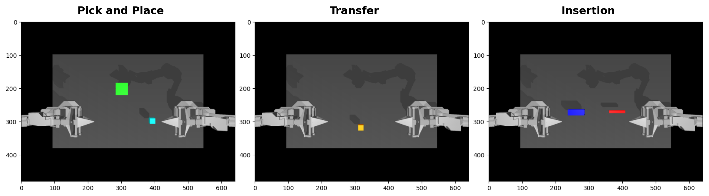
Figure 1. SMoRE architecture overview. Images from multiple camera viewpoints pass through a pretrained ResNet-18 backbone. The resulting feature tokens, together with proprioceptive tokens, are refined by a shared transformer encoder. The MoE decoder then receives encoder output via cross-attention and routes each token through a sparse top-K subset of expert FFNs to predict the action trajectory in parallel.
Each decoder token activates only a top-K subset of routed experts plus always-on shared experts. This sparse activation keeps inference fast while increasing effective model capacity.
Expert load balancing is achieved via learnable bias terms on affinity scores, following DeepSeek-V2. No auxiliary loss is needed, keeping optimization clean.
ResNet-18 feature maps from all camera viewpoints are flattened and concatenated into a joint visual token sequence, enabling rich spatial reasoning across views.
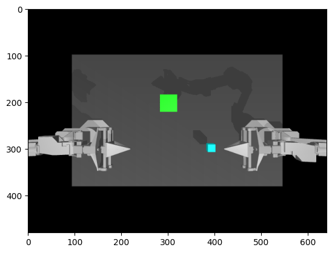
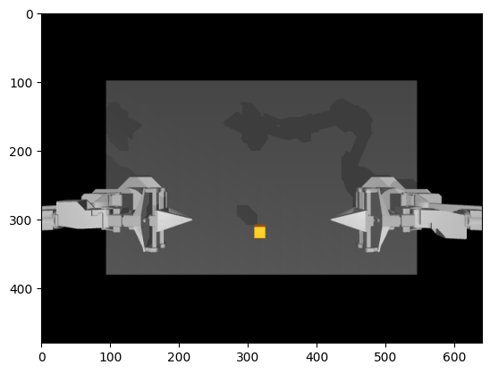
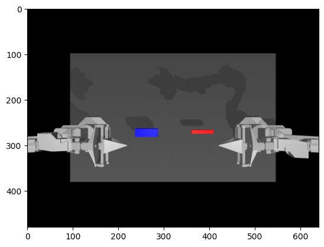
Table 1. Single-policy-per-task simulation results (50 episodes, 3 seeds × 50 rollouts). SMoRE matches ACT with 32% fewer parameters.
| Model | Params | PnP 66% | PnP 100% | Transfer 75% | Transfer 100% | Insertion 75% | Insertion 100% | Avg |
|---|---|---|---|---|---|---|---|---|
| ACT | 84M | 96.0 ± 3.2 | 96.0 ± 3.2 | 98.6 ± 1.9 | 98.6 ± 1.9 | 85.3 ± 0.9 | 69.3 ± 3.7 | 87.9 |
| SMoRE (ours) | 57M | 96.0 ± 2.5 | 96.0 ± 2.5 | 98.3 ± 2.5 | 98.3 ± 2.5 | 76.0 ± 5.6 | 68.6 ± 3.4 | 87.6 |
Table 2. Joint multi-task simulation results. SMoRE outperforms ACT by 4% with 8% fewer parameters — largest gains on the challenging insertion task.
| Model | Params | PnP 66% | PnP 100% | Transfer 75% | Transfer 100% | Insertion 75% | Insertion 100% | Avg |
|---|---|---|---|---|---|---|---|---|
| ACT | 84M | 100.0 ± 0.0 | 100.0 ± 0.0 | 97.3 ± 2.5 | 97.3 ± 2.5 | 84.6 ± 8.9 | 56.6 ± 6.8 | 84.6 |
| SMoRE (ours) | 77M | 98.0 ± 2.8 | 98.0 ± 2.8 | 98.6 ± 1.9 | 98.6 ± 1.9 | 90.0 ± 7.4 | 69.3 ± 8.3 | 88.6 |
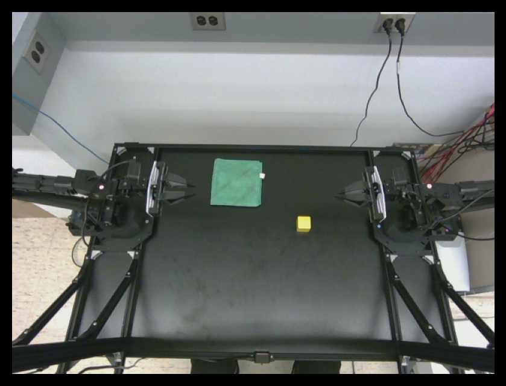
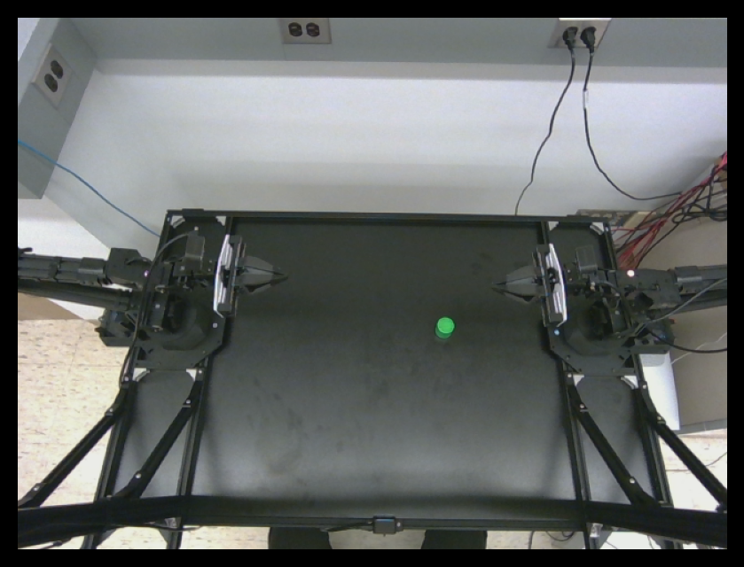
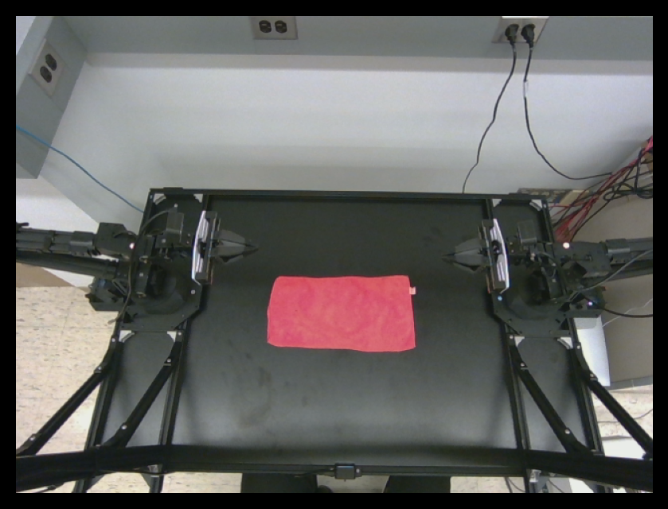
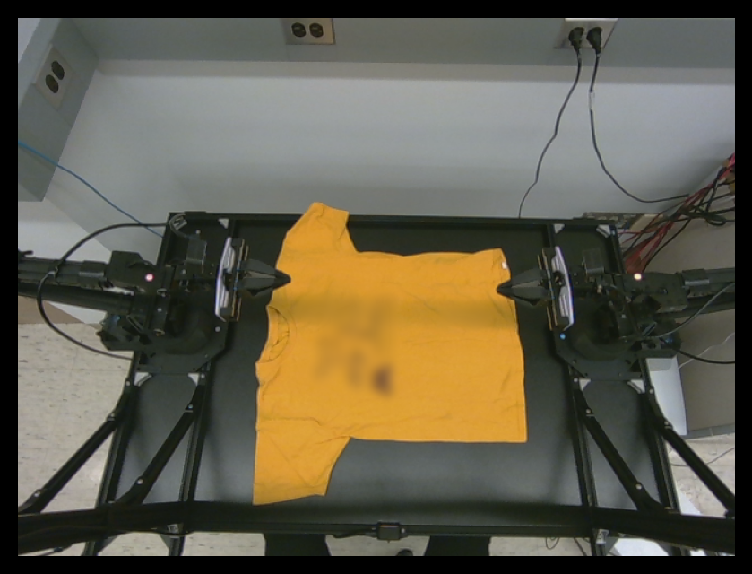
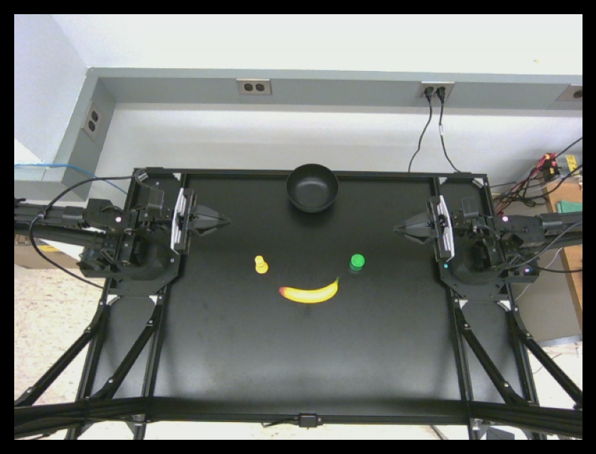
Table 3. Real-robot short-horizon tasks (10 rollouts each, jointly trained). SMoRE achieves a 70-point improvement in average success rate.
| Task | ACT | SMoRE (ours) |
|---|---|---|
| Transfer | 0/10 | 10/10 |
| Pick & Place | 8/10 | 9/10 |
| Flip Towel | 0/10 | 10/10 |
| Average | 26.6% | 96.6% |
Table 4. Real-robot long-horizon tasks (10 rollouts each, jointly trained). SMoRE outperforms ACT by 70 percentage points on average.
| Task | ACT | SMoRE (ours) |
|---|---|---|
| Fold T-Shirt | 1/10 | 10/10 |
| Clear Table | 1/10 | 6/10 |
| Average | 10.0% | 80.0% |
To understand what the MoE experts learn, we visualize encoder representations via t-SNE and expert activation patterns as per-layer heatmaps during open-loop inference.
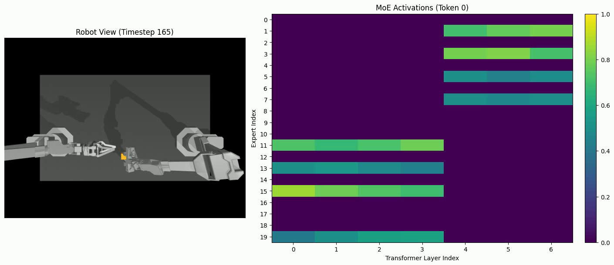
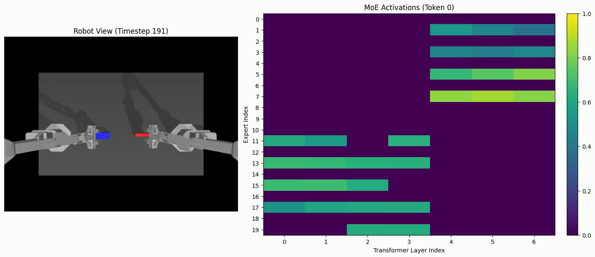
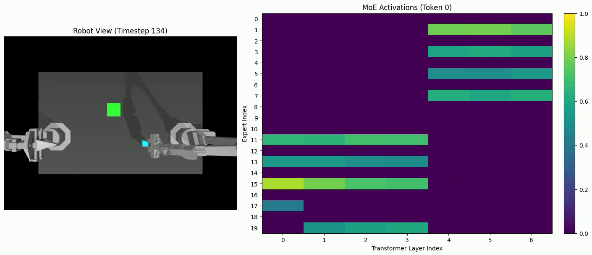
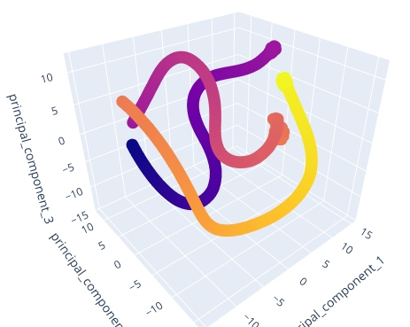
We initially expected expert routing to be task-specific. Instead, routing is driven by the sub-action being executed. Timesteps 165 and 134 share an approach-and-grasp motion across different tasks and activate nearly identical experts in early layers (experts 11, 12, 13, 15). Timestep 191 (insertion), which requires a qualitatively different arm configuration, recruits a distinct subset (experts 17, 19).
This suggests SMoRE implicitly decomposes manipulation into reusable motor primitives, and tasks that share primitives mutually reinforce each other's sub-networks during training — explaining why every task achieves higher success under joint training than in isolation.
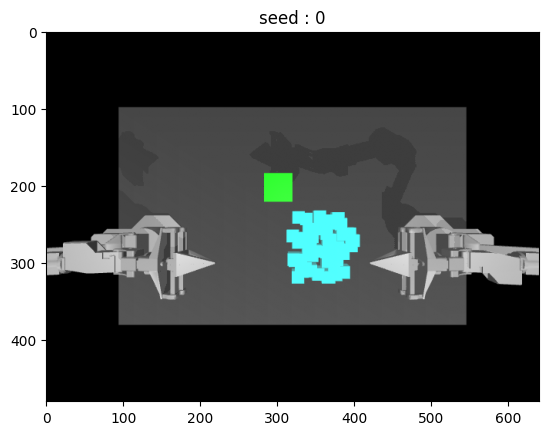
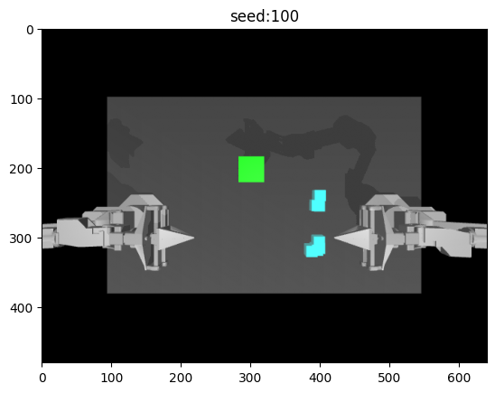
SMoRE is deterministic — it predicts a single fixed action trajectory per observation. In low-data settings, this means the policy struggles with object configurations outside the training distribution. As visualized above, the pick-and-place policy fails for cube positions not seen during training.
These limitations can be addressed by replacing the deterministic decoder with a stochastic decoder (e.g., diffusion-based or flow-matching), which can model the multimodal distribution of expert demonstrations and better generalize to unseen configurations. Integrating a stochastic decoder with the MoE architecture is a primary direction for future work.
@inproceedings{menga2026smore,
title = {{SMoRE}: Small Mixture of Robot Expert Transformer
for Bimanual Manipulation},
author = {Menga, Narsimha},
booktitle = {Conference on Robot Learning (CoRL)},
year = {2026},
}